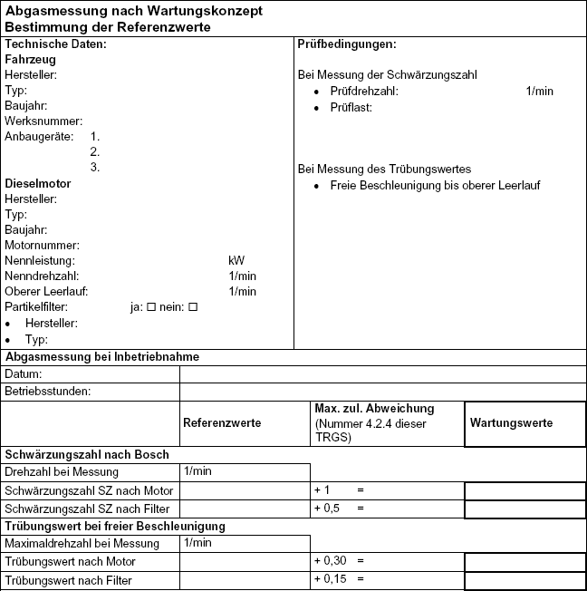
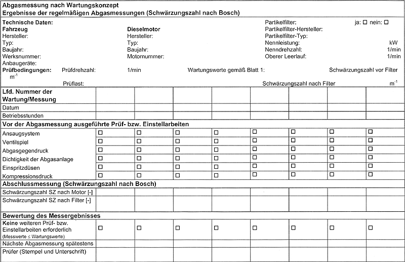
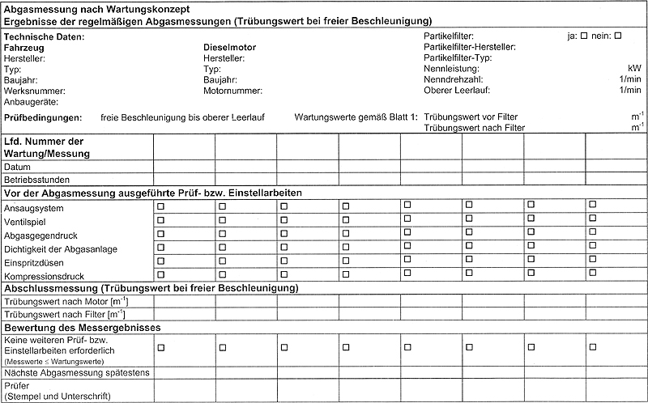

(1) Sofern die Abgase eines Dieselmotors nicht ständig durch ein On-Board-Diagnostic- System (OBD) mit Partikelsensor überwacht werden, ist der Motorzustand nach
(2) Bei fest eingebautem Dieselpartikelfilter ist die Schwärzungszahl bzw. der Trübungswert vor und hinter der Filteranlage zu bestimmen. Auf die Bestimmung vor der Filteranlage kann verzichtet werden, wenn die nach der Filteranlage gemessene Schwärzungszahl nicht mehr als 0,5 bzw. der Trübungswert nicht mehr als 0,15 m-1 beträgt.
(3) Überschreiten die Messwerte die Referenzwerte 8)
darf der Dieselmotor nicht mehr in ganz oder teilweise geschlossenen Arbeitsbereichen eingesetzt werden.
(4) Die Abgasuntersuchungen sind schriftlich zu dokumentieren, z. B. in Wartungskarteien oder Untersuchungsprotokollen. Von jeder Abgasuntersuchung sind mindestens die folgenden Angaben festzuhalten:
7) Oberer Leerlauf eines Dieselmotors im Sinne dieser TRGS ist die Drehzahl des ohne Belastung laufenden Motors, die sich einstellt, wenn der mechanische Drehzahlregler oder die elektronische Motorregelung die höchste Drehzahl einsteuert. Freie Beschleunigung im Sinne dieser TRGS ist der Messzyklus aus der Abgasuntersuchung von Kraftfahrzeugen mit Kompressionszündermotor (Dieselmotor) nach Anlage VIIIa zu § 47a StVZO. Schwärzungszahl im Sinne dieser TRGS ist ein Maß für die Schwarzrauchemission eines Dieselmotors, gemessen mit einem auf Filterbasis arbeitenden Messgerät. Zur Messung wird ein bestimmter Volumenstrom Abgas durch ein Filterpapier über eine festgelegte Fläche gesaugt. Der im Abgas enthaltene Ruß schwärzt das Filterpapier. Die Schwärzungszahl wird durch Messung der optischen Reflexion des geschwärzten Filters im Vergleich mit einem sauberen Filter bestimmt und als Schwärzungszahl ausgedrückt. Trübungswert im Sinne dieser TRGS ist ein Maß für die Schwarzrauchemission eines Dieselmotors, ermittelt entsprechend einer Abgasuntersuchung für Kraftfahrzeuge mit Kompressionszündermotor (Dieselmotor) nach Anlage VIIIa zu § 47a StVZO. 8) Referenzwerte im Sinne dieser TRGS sind Werte für die Schwärzungszahl bzw. den Trübungswert im emittierten Abgas eines Dieselmotors an einem reproduzierbaren Betriebspunkt (z. B. obere Leerlaufdrehzahl oder freie Beschleunigung), die bei Abgasuntersuchungen im Rahmen des Wartungskonzeptes zur Beurteilung des Motorzustandes herangezogen werden. Die Referenzwerte einschließlich der Prüfbedingungen sind bei der Inbetriebnahme nach der Herstellung oder nach einem Umbau mit Einfluss auf die Abgasemission des mit Dieselmotor ausgerüsteten Fahrzeugs, Flurförderzeugs, Maschine oder Gerätes durch Messung nach dem Wartungskonzept zu ermitteln und zu dokumentieren. Angaben der Fahrzeughersteller über maximal zulässige Trübungswerte bei der verkehrsrechtlichen Abgasuntersuchung nach § 47a StVZO eignen sich nicht als Referenzwerte für das Wartungskonzept. |

Die Referenzwerte für die Abgasmessung im Wartungskonzept sind bei der Inbetriebnahme des Fahrzeuges mit allen vorgesehenen Anbaugeräten durchzuführen unter Anwendung des für die spätere regelmäßige Abgasmessung vorgesehenen Messverfahrens.
Aus den Referenzwerten ergeben sich durch Addition mit den maximal zulässigen Abweichungen nach Nummer 4.2.4 dieser TRGS Wartungswerte für die späteren regelmäßigen Abgasmessungen, bei deren Überschreiten weitere Prüfungen bzw. Einstellungen vorzunehmen sind.

